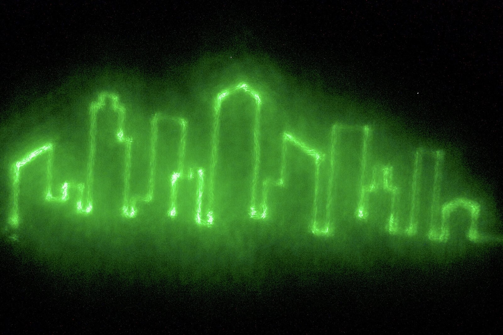

Pender
Converting a 3D printer to a art plotter

Has releases
1 update, Jul 2026
Spectra
Code spectrum
Hardware 6, System / network 3, Data / tools 5, Web / platform 2
Light
- 400 to 700 nm
Timeline
Working build release
Converting a 3D printer to a art plotter

Has releases
1 update, Jul 2026
Hardware 6, System / network 3, Data / tools 5, Web / platform 2